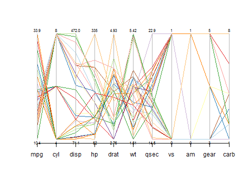

Investigating Variable Effects on MPG
Utilizing Parallel Coordinate Graphs
By: Steve Rowe
Parallel Coordinate Graphs
- Way of visualizing multivariate data
- Used as early as 1880 by Henry Gannetts in General Summary, Showing the Rank of States, by Ratios
- More useful when used interactively, as in this application:

Using Parallel Coordinates With MPG
The application allows two axes of control:
- Selecting Variables
- Used to see relationships more clearly
- Limiting MPG range
- Used to see which variables are related to ranges.
- For instance, what kind of cylinders are in high MPG cars?
Selecting Variables
- Variables can be removed by unchecking the variables boxes.
- Sometimes relationships can become more clear by limiting the variables.
- For example, only displacement and weight looks like this:

- It is clear that displacement is inversely correlated with high MPG. Weight is highly correlated with displacement.
Utilizing the MPG Range
- The MPG range can be limited to see what variables affect a high MPG cars.
- Limiting the range to >= 22 MPG generates this graph:

- Most high MPG cars have low displacement, low weight, are slow, and are manual transmissions.